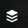
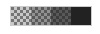
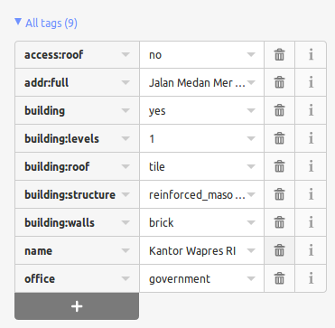

Guida rapida iD editor¶
L’editor iD è di fatto l’editor di OpenStreetMap basato su browser. iD è veloce e facile da usare, e permette la mappatura da varie fonti di dati come immagini satellitari e aeree, GPS, Field Papers o Mapillary.
L’editor iD è un ottimo modo di modificare per piccoli e facili cambiamenti che non richiedono le funzioni avanzate di JOSM (un editor di mappatura più avanzato). Questo capitolo mostra le basi della modifica con iD.
Contenuti
Avviare l’Editor iD¶
L’editor iD richiede una connessione attiva a Internet.
Apri il tuo browser Internet e vai al sito web di OpenStreetMap all’indirizzo https://www.openstreetmap.org.
Login usando il tuo account OpenStreetMap.
Scorri e ingrandisci la mappa fino all’area che vuoi modificare. Puoi fare una panoramica tenendo premuto il tasto sinistro del mouse e trascinando la mappa nell’area desiderata.
Clicca sulla piccola freccia accanto a Modifica, poi clicca su Modifica con iD (in-browser editor).


- [1] Edit Feature Panel: Questo pannello mostra i tag dell’oggetto
selezionato sulla mappa. Puoi aggiungere o modificare i tag da questo pannello.
[2] Tools: Questo pannello mostra gli strumenti di editing di base.
[3] Map panel: Questo pannello mostra varie funzioni di configurazione.
- [4] Information panel: Questo pannello mostra varie informazioni, come
la barra della scala e quali utenti hanno contribuito all’area.
Configura il layer di sfondo¶
Clicca sul pulsante Impostazioni di sfondo o usa il tasto di scelta rapida b. 

Per cambiare il livello di luminosità clicca su una di queste caselle, i livelli sono 100%, 75%, 50% e 25% 
Puoi anche cambiare il layer di sfondo in base al tuo fornitore di tasselli desiderato (l’impostazione predefinita è Bing Aerial Imagery).
Puoi aggiungere i tuoi tasselli mappa cliccando su Custom. Per esempio, se vuoi aggiungere una carta geografica [1], clicca su Custom poi clicca sull’icona della lente di ingrandimento (ricerca) per aprire la seguente finestra:

Inserisci il tuo FieldPaper snapshot URL, che sarà qualcosa come questo: http://fieldpapers.org/snapshots/cqhmf2v9#18/37.80593/-122.22715
Per visualizzare le tracce GPS dal tuo computer (formato GPX), trascina il file GPX nell’editor iD.
Per attivare le Tracce GPS OpenStreetMap clicca sulla casella. Nell’immagine qui sotto, le tracce GPS pubbliche sono mostrate in vari colori, indicando la direzione del viaggio.

Se è presente un offset delle immagini, è possibile correggerlo facendo clic su Fix Alignment.

Clicca i pulsanti di navigazione per spostare le immagini. Fai clic sul pulsante di ripristino per tornare alla posizione predefinita.

Aggiungi punti¶
Per aggiungere un nuovo punto, clicca sul pulsante Punto. 
Il cursore del mouse si trasformerà in un segno più (+). Ora, clicca su una posizione che conosci per marcare una posizione. Per esempio, se sai che c’è un ospedale nella tua zona, clicca sulla posizione dell’edificio dell’ospedale.

Nota che viene aggiunto un nuovo punto. Allo stesso tempo, il pannello di sinistra cambierà per mostrare un modulo dove è possibile selezionare gli attributi per l’oggetto. Clicca su Hospital Grounds per etichettare il punto come ospedale.

Puoi usare i moduli per riempire le informazioni dettagliate sul tuo punto. Puoi riempire il nome dell’ospedale, l’indirizzo e/o altre informazioni aggiuntive. Nota che ogni elemento avrà opzioni diverse, a seconda dell’etichetta che scegli dal pannello degli elementi.
Se fai un errore, come una posizione sbagliata, puoi spostare il tuo punto in una nuova posizione tenendo il tasto sinistro del mouse sul tuo punto e trascinandolo. Oppure, se vuoi cancellare il punto, clicca con il tasto sinistro del mouse sul punto, attiva il menu contestuale cliccando con il tasto destro del mouse e poi clicca sul pulsante che sembra un cestino.
Un «punto» creato nell’editor iD è in realtà un «nodo» autonomo con un insieme di «tag» su di esso.
Disegna linee¶
Per aggiungere una nuova linea, clicca sul pulsante Line. 
Il cursore del mouse si trasformerà in un segno più (+). Trova una strada che non è stata disegnata sulla mappa e tracciala. Clicca una volta su un punto dove inizia il segmento di strada, muovi il mouse e clicca per aggiungere altri punti. Fai doppio clic per terminare il processo di disegno. Nota il pannello sulla sinistra.

Proprio come con un punto, seleziona i tag appropriati per la tua linea.
Puoi trascinare dei punti dalla linea cliccando il tasto sinistro del mouse su un punto e trascinandolo.
Puoi anche spostare l’intera linea selezionandola e scegliendo lo strumento Move tool. Poi trascinare la linea in una nuova posizione.

Quando clicchi con il tasto sinistro del mouse su un singolo punto (nodo) della linea e clicchi con il tasto destro del mouse per attivare il menu di contesto, vedrai questi strumenti:
Scollega il punto dalla linea.

Dividi una linea in due linee dal punto che hai selezionato.

Quando clicchi con il tasto sinistro del mouse su una linea (ma non su un punto), vedrai questi strumenti:
Crea un cerchio da una linea (attivo solo se la linea è chiusa)

Muovi linea
Forma una forma quadrata da una linea (attivo solo se la linea è chiusa)

Inverti la direzione della linea (buona per fiumi e strade a senso unico)

Una «linea» creata nell’editor iD è in realtà una «via» con dei «tag» su di essa.
Nota
Una nota speciale sulla Cancellazione: In generale dovresti evitare di cancellare la mappatura di altre persone se ha solo bisogno di miglioramenti. Puoi cancellare i tuoi errori, ma dovresti cercare di adeguare gli oggetti mappati di altre persone se hanno bisogno di modifiche. Questo preserva la storia degli oggetti nel database OSM ed è rispettoso dei colleghi mappatori. Se pensi davvero che qualcosa debba essere cancellato, considera di chiedere prima al mappatore originale o ad una delle liste di posta elettronica OSM.
Disegna forme (poligoni)¶
Per aggiungere una nuova forma a più lati, clicca sul pulsante Area.

Il cursore del mouse si trasformerà nel segno più (+). Prova a tracciare un edificio usando le immagini come guida.
Noterai che il colore della forma cambierà a seconda degli attributi che gli assegni.

Gli strumenti disponibili quando si seleziona una forma e si attiva il menu contestuale con il tasto destro del mouse sono simili a quelli di quando si clicca su una linea.
Un «poligono» nell’editor iD è in realtà una «linea chiusa» con delle etichette sopra.
Disegna multipoligoni¶
A volte devi disegnare un poligono che non ha solo un contorno esterno ma anche uno o più contorni interni. Basti pensare agli edifici con cortili interni o ai laghi con isole. Non disegnare tutti questi modi in un’unica linea in modo che i contorni interni siano sospesi dal contorno esterno. Piuttosto disegna questi contorni separati, attacca delle etichette solo al contorno esterno, seleziona tutti i contorni e premi C per combinarli in quello che si chiama un multipoligono.

Quando si seleziona uno qualsiasi dei contorni del multipoligono appena creato si può vedere sulla sinistra a quali multipoligoni appartiene

{kind=link}
{kind=link}
{kind=link}
Salvare le modifiche¶
Quando (e se) vuoi salvare le tue modifiche su OpenStreetMap, clicca sul pulsante Save. Il pannello sulla sinistra mostrerà il pannello di caricamento.

Inserisci un commento sulle tue modifiche e clicca su Save.
Nota
Se hai modificato lo stesso elemento (punto, via o area) nello stesso momento in cui un’altra persona la stava modificando, riceverai un avviso che le tue modifiche non possono essere caricate finché non hai risolto i conflitti - scegli di chi accettare le modifiche e carica le tue modifiche. Risolvere i conflitti spesso implica accettare le modifiche dell’altra persona, nel qual caso probabilmente vorrai tornare all’elemento in questione e modificarlo di nuovo (**questa volta salva subito dopo la modifica per cercare di evitare di nuovo un conflitto!*).*
Aggiungi informazioni aggiuntive e tag personalizzati¶
Quando stai modificando un oggetto, vedrai una striscia di icone nella parte inferiore del pannello degli attributi. Puoi aggiungere ulteriori informazioni cliccando su queste icone:
Aggiungi l’elevazione

Aggiungi note

Aggiungi contatti / numero di telefono

Aggiungi tag sorgente

Aggiungi sito web

Aggiungi informazioni sull’accessibilità

Aggiungi link Wikipedia

Oppure, puoi aggiungere tag personalizzati cliccando su All tags. 
Questo mostrerà tutti i tag collegati all’elemento.

Clicca sul segno più (+) per aggiungere chiavi e valori o clicca sull’icona del cestino per cancellare i tag.
E ora?¶
Prova la documentazione di LearnOSM, da cui è stata tratta questa guida rapida: https://learnosm.org/en/beginner/id-editor/
Sito web: https://wiki.openstreetmap.org/wiki/ID